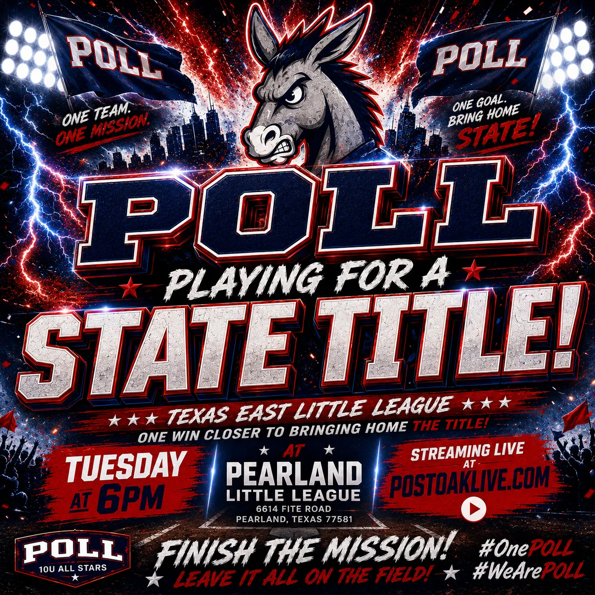

Texas East Little League State Championship
One Game.One Title.
The Texas East State Championship is here.
Post Oak Little League’s 10U All Stars are one win away from bringing home the Texas East State Championship. Join us live as the season comes down to one final game.
Why this game matters
The season comes down to tomorrow night.
District champions. Section champions. Now Post Oak plays for the title every team in Texas East has been chasing.

Texas East Little League State Championship
This is the official landing page for the final game: date, first pitch, location, hype video, bracket, and the live broadcast path all in one place.
Go to the live broadcastMeet the team
One Team. One Mission.
Twelve boys. Endless practices. District Champions. Section Champions. Tomorrow they play for the Texas East Little League State Championship.
They earned this stage together — inning by inning, pitch by pitch, with families and coaches behind them the whole way.

Watch it live
You are in the right place.
Championship Broadcast
Open the livestream page before first pitch for the cleanest available game-day experience on phones, tablets, and big screens.
Watch the championship liveCatch The Fever
Start with the Post Oak 10U All Stars hype video, then come back tomorrow night for the game that decides the title.
Watch hype video